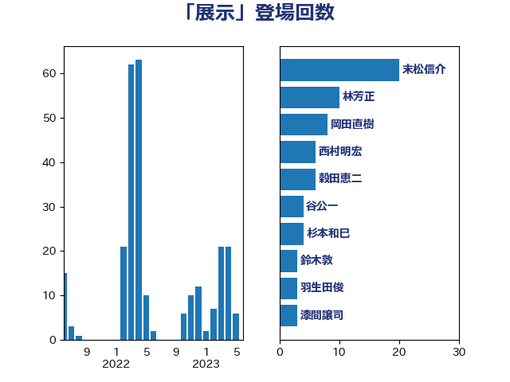

単語「展示」

| 末松信介 | 自由民主党 | 20 回 |
| 林芳正 | 自由民主党 | 10 回 |
| 岡田直樹 | 自由民主党 | 8 回 |
| 西村明宏 | 自由民主党 | 6 回 |
| 穀田恵二 | 日本共産党 | 6 回 |
| 谷公一 | 自由民主党 | 4 回 |
| 杉本和巳 | 日本維新の会 | 4 回 |
| 鈴木敦 | 国民民主党 | 3 回 |
| 羽生田俊 | 自由民主党 | 3 回 |
| 漆間譲司 | 日本維新の会 | 3 回 |
| 江藤拓 | 自由民主党 | 3 回 |
| 杉田水脈 | 自由民主党 | 3 回 |
| 斉藤鉄夫 | 公明党 | 3 回 |
| 大塚耕平 | 国民民主党 | 3 回 |
| 伊東信久 | 日本維新の会 | 3 回 |
| 今井絵理子 | 自由民主党 | 3 回 |
| 高木真理 | 立憲民主党 | 2 回 |
| 須藤元気 | 無所属 | 2 回 |
| 金城泰邦 | 公明党 | 2 回 |
| 赤嶺政賢 | 日本共産党 | 2 回 |
| 西村康稔 | 自由民主党 | 2 回 |
| 若宮健嗣 | 自由民主党 | 2 回 |
| 米山隆一 | 立憲民主党 | 2 回 |
| 矢倉克夫 | 公明党 | 2 回 |
| 田村智子 | 日本共産党 | 2 回 |
| 片山大介 | 日本維新の会 | 2 回 |
| 柳本顕 | 自由民主党 | 2 回 |
| 岬麻紀 | 日本維新の会 | 2 回 |
| 尾身朝子 | 自由民主党 | 2 回 |
| 塩川鉄也 | 日本共産党 | 2 回 |
| 吉田統彦 | 立憲民主党 | 2 回 |
| 吉川ゆうみ | 自由民主党 | 2 回 |
| 加藤勝信 | 自由民主党 | 2 回 |
| 中川康洋 | 公明党 | 2 回 |
| 上杉謙太郎 | 自由民主党 | 2 回 |
| 高橋光男 | 公明党 | 1 回 |
| 門山宏哲 | 自由民主党 | 1 回 |
| 長妻昭 | 立憲民主党 | 1 回 |
| 長友慎治 | 国民民主党 | 1 回 |
| 金子俊平 | 自由民主党 | 1 回 |
| 進藤金日子 | 自由民主党 | 1 回 |
| 足立敏之 | 自由民主党 | 1 回 |
| 西銘恒三郎 | 自由民主党 | 1 回 |
| 西岡秀子 | 国民民主党 | 1 回 |
| 藤木眞也 | 自由民主党 | 1 回 |
| 菊田真紀子 | 立憲民主党 | 1 回 |
| 芳賀道也 | 国民民主党 | 1 回 |
| 義家弘介 | 自由民主党 | 1 回 |
| 美延映夫 | 日本維新の会 | 1 回 |
| 牧山ひろえ | 立憲民主党 | 1 回 |
| 津島淳 | 自由民主党 | 1 回 |
| 永岡桂子 | 自由民主党 | 1 回 |
| 榛葉賀津也 | 国民民主党 | 1 回 |
| 森屋隆 | 立憲民主党 | 1 回 |
| 松沢成文 | 日本維新の会 | 1 回 |
| 松本尚 | 自由民主党 | 1 回 |
| 有村治子 | 自由民主党 | 1 回 |
| 新妻秀規 | 公明党 | 1 回 |
| 庄子賢一 | 公明党 | 1 回 |
| 川合孝典 | 国民民主党 | 1 回 |
| 岸田文雄 | 自由民主党 | 1 回 |
| 山谷えり子 | 自由民主党 | 1 回 |
| 山本博司 | 公明党 | 1 回 |
| 小野泰輔 | 日本維新の会 | 1 回 |
| 寺田静 | 無所属 | 1 回 |
| 宮路拓馬 | 自由民主党 | 1 回 |
| 宮本岳志 | 日本共産党 | 1 回 |
| 安江伸夫 | 公明党 | 1 回 |
| 大島敦 | 立憲民主党 | 1 回 |
| 大岡敏孝 | 自由民主党 | 1 回 |
| 吉良よし子 | 日本共産党 | 1 回 |
| 務台俊介 | 自由民主党 | 1 回 |
| 佐々木さやか | 公明党 | 1 回 |
| 伊藤孝恵 | 国民民主党 | 1 回 |
| 上野賢一郎 | 自由民主党 | 1 回 |